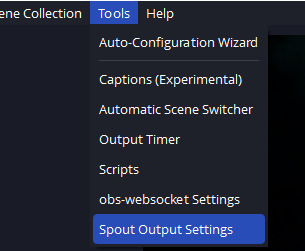
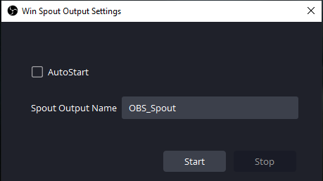
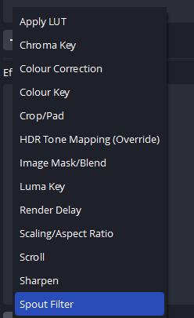
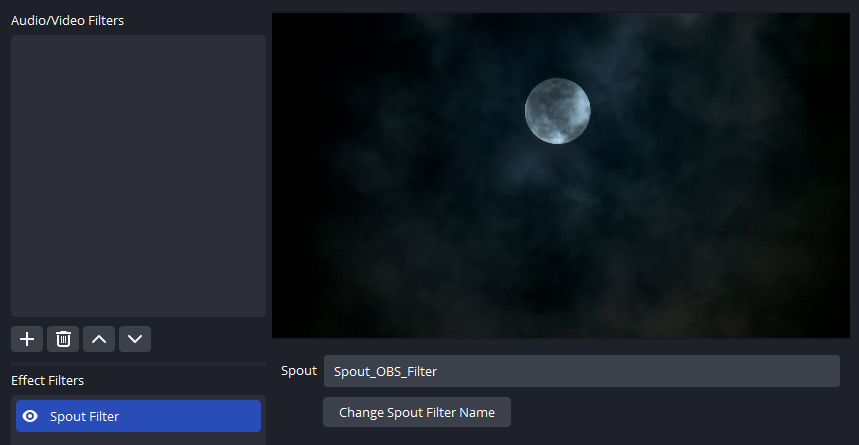
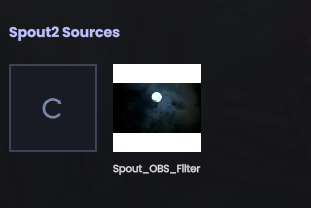
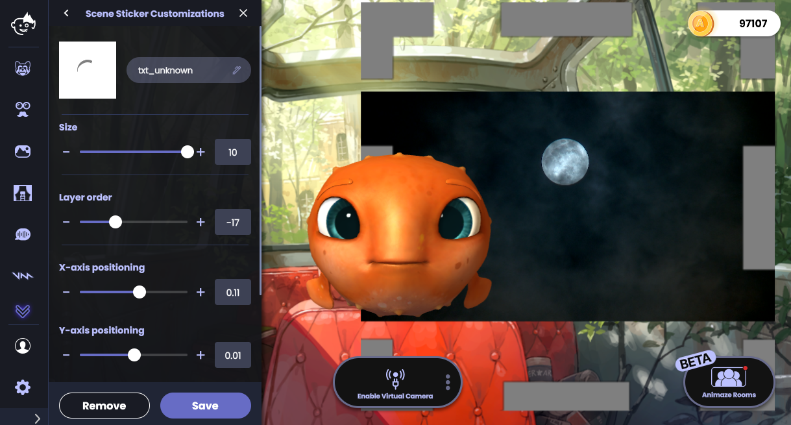
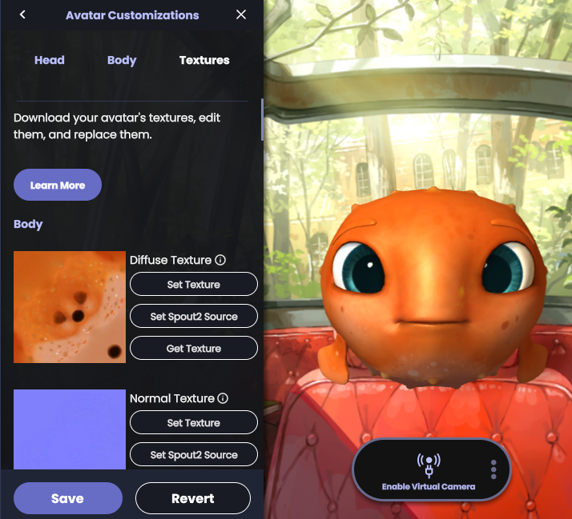
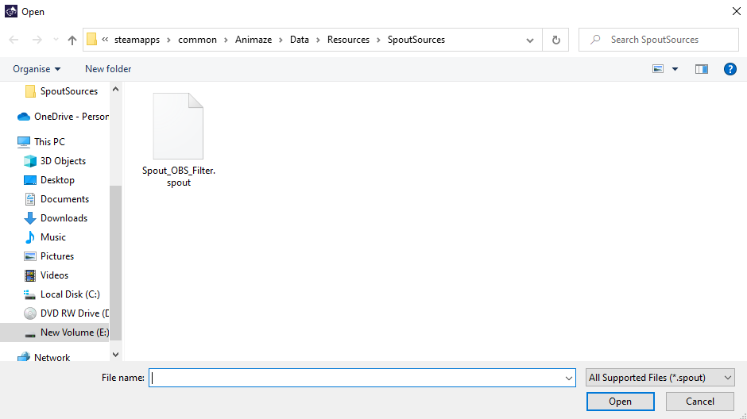
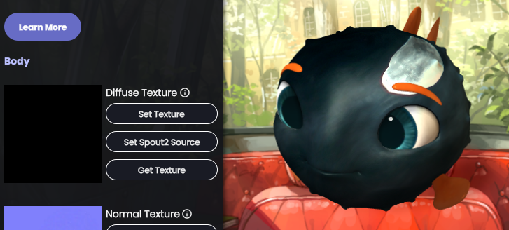

Using Spout2 sources in Animaze
What is Spout2?
Spout is a video frame sharing system for Microsoft Windows, which allows applications to share OpenGL textures. Spout leverages your graphics card enabling to you send real-time video between Windows applications with near-zero latency or overhead.
Where can Spout2 be used in Animaze?
Spout2 system is currently supported in Animaze in two scenarios:
-
Sending the rendered video frame of the avatar to applications that support receiving Spout2 feeds. More info here.
-
Receiving a video feed from applications that support sending Spout2 feeds such as OBS. The receiving video feed can be used as a dynamic texture on an Avatar or Prop and as a Scene Sticker.
Goal
In this article we are going to use OBS to render a video that we are going to map on a Scene Sticker in Animaze.
Requirements
-
OBS Studio version 28 or above that you can download from the official website.
-
The Spout2 plugin that can be installed by going to Animaze Settings > Dedicated Capture Window > Install Spout2 OBS Plugin or manually from the official website.
Scene Sticker usage
1. (in OBS) go to Tools > Spout Output Settings and click Start in the prompted options menu. This will stream the whole OBS canvas through Spout2.


2. (in OBS) An alternative method of outputting only a particular OBS Source in your OBS Scene is to right click on a source, go to Filters and add Spout Filter as an Effect.


3. (in Animaze) On the left-hand menu locate and click the Scene Stickers button.
4. (in Animaze) In the Scene Stickers gallery scroll down to the Spout2 Shelf and hit the Refresh Button

5. (in Animaze) Now select the Spout2 item.

6. Done
Retexturing usage
1. (in OBS) go to Tools > Spout Output Settings and click Start in the prompted options menu. This will stream the whole OBS canvas through Spout2.


2. (in OBS) An alternative method of outputting only a particular OBS Source in your OBS Scene is to right click on a source, go to Filters and add Spout Filter as an Effect.


3. (in Animaze) Go to Avatars gallery and select your current avatar so you can open up the Customizations drawer. Navigate to the Textures tab

4. (in Animaze) In the Body section, change the Diffuse Texture by clicking the Set Spout2 Source button. This will open a file explorer with Animaze Spout source files.

5. (in Animaze) Select your Spout source file. This particular folder is refreshed every time you set a as an avatar texture. 